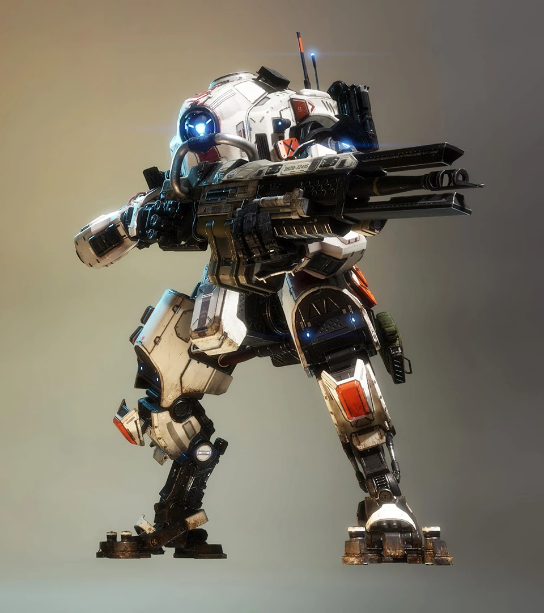

Tone

A Tone a célkövetésre és a robbanó lövedékekre összpontosít. 40mm-es Ágyúja nyomkövető lövedékeket lő ki, amelyek lehetővé teszik a célpontok bemérését a Követő Rakéták számára. Szonárimpulzusa felfedi a közeli ellenségeket, míg Salvo Magja irányított rakétazáport indít.